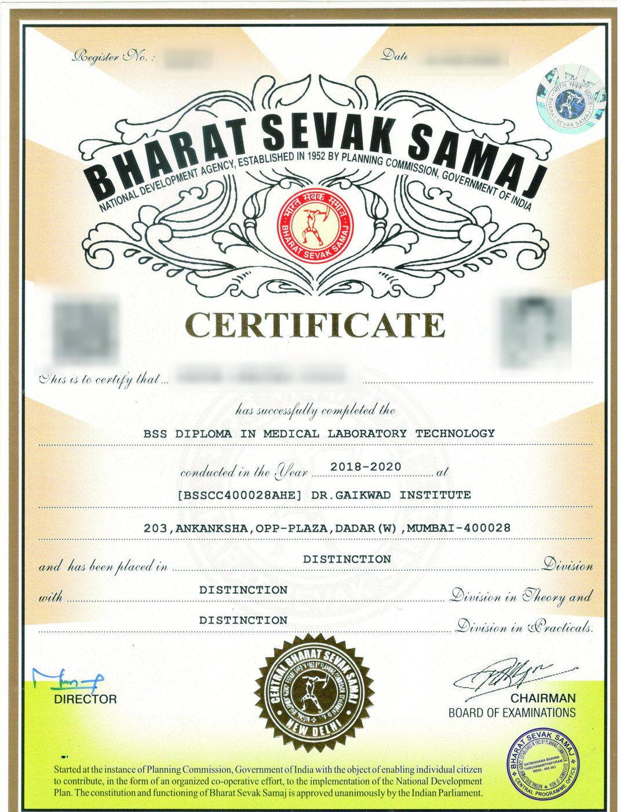
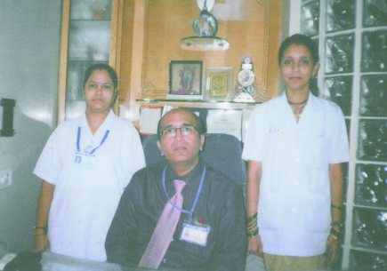
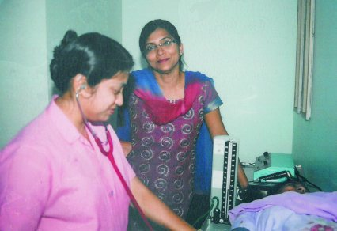
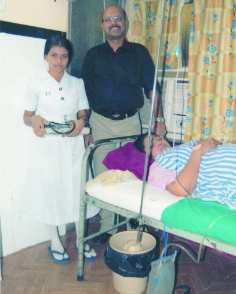

Three decades of training technicians for Mumbai's hospitals.
We are a paramedical training institute in Dadar West. We teach four stipendiary diplomas, place our graduates in private hospitals, laboratories and clinics across the city, and certify them under Bharat Sevak Samaj.
An institute built around the posting, not the classroom.
Most paramedical courses in Mumbai teach theory and leave the student to find work afterwards. We built ours the other way round. Four months of classroom training establish the fundamentals; the remaining twenty months are spent on a full-time posting in a working nursing home, diagnostic laboratory, operation theatre or optician's practice, under a practising doctor.
That posting is where the diploma stops being theoretical. It is also where most of our placements originate — the laboratory or nursing home that trains a student for twenty months is very often the one that hires them.
What we expect
We are a strict institute, and we say so plainly. Ninety per cent attendance is compulsory. Uniforms are required on duty. Night duty is part of the Patient Care course, and laboratory students work two shifts. Students who cannot commit to this will not do well here, and we would rather say that at the counselling stage than after a fee has been paid.
What we do not claim
Our placement assistance covers private hospitals, clinics and diagnostic laboratories. It does not extend to Government hospital appointments, and we will not suggest otherwise. The Diploma in Patient Care and Diploma in Patient Care Assistant have no affiliation with the Indian Nursing Council. Our certificate courses for working technicians carry neither stipend nor placement assistance.
Ask us for the fee schedule, the refund rules and the posting terms in writing at your first visit. We give them to every family as a printed prospectus, and everything in it is also published on this website.
Bharat Sevak Samaj
B.S.S. is a national development agency promoted by the Government of India in 1952 to secure public co-operation in implementing government plans. Pandit Jawaharlal Nehru was its founder President.
Its constitution and functioning were approved unanimously by the Indian Parliament — recorded in the First Five Year Plan, in the chapter on public co-operation in national development. Every diploma awarded at this institute is issued under that certification.

What you are awarded
A specimen of the certificate issued on successful completion, carrying the Bharat Sevak Samaj seal, your register number, the course and year, and the division obtained in theory and practicals. It is signed by the Director and by the Chairman of the Board of Examinations.
Specimen shown for illustration. The holder's name, register number, photograph and QR code have been redacted from this scan. Certificates are collected within one month of convocation.
Our students on posting
Photographs from the institute's own archive, taken at the nursing homes, laboratories and clinics where our students train.



Come and see the institute before you decide.
We would rather you visit, meet the staff and ask difficult questions than enrol on the strength of a website. Telephone first to confirm counselling hours.